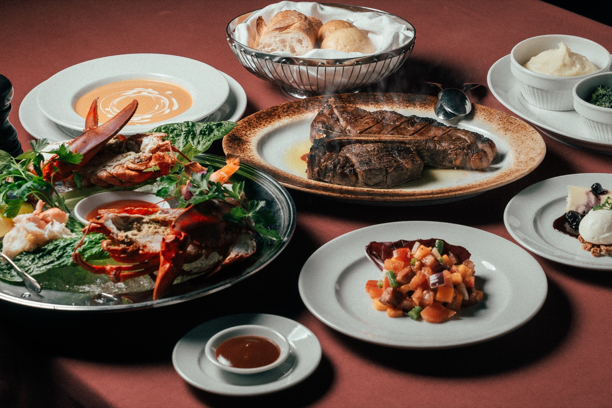

Re : Wharf Course
¥25,000
肉と海の至福を一度に。USプライムビーフのTボーンステーキと、ロブスターをはじめ旬の海の幸を大皿に盛ったシーフードプラッターを、2名様で分け合うコースです。
- 内容
- Re : Wharfサラダ、シーフードプラッター（2名様）、ロブスターの濃厚ビスク、パン、USプライムビーフ Tボーンステーキ（2名様）、マッシュポテト、クリームスピナッチ、NYチーズケーキ、コーヒーまたは紅茶
- ご利用条件
- 2名様よりご注文いただけます。最大滞在時間はご予約のお時間から2時間です。お席は店内席または窓際席。仕入れ状況により内容が変わる場合があります。ランチタイムのご予約も承っています。